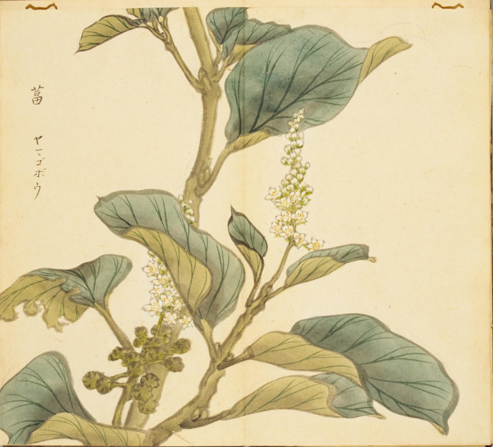
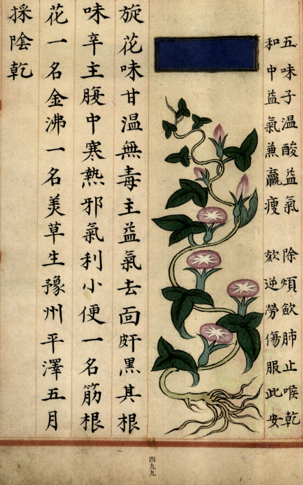
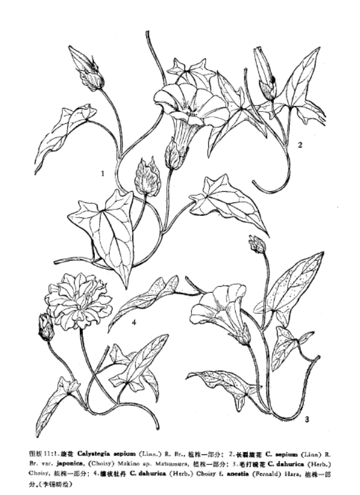

出现篇目
古代记载 《毛诗故训传》
葍，恶菜也。新特，外昏也。（《毛传》注《我行其野》）
《〈毛诗传〉笺》
笺云：葍，䔰也，亦仲春时生，可采也。（郑玄笺释《我行其野》）
《毛诗草木鸟兽虫鱼疏》
葍，一名，幽州人谓之燕葍，其根正白，可著热灰中，温啖之，饥荒之岁可蒸以御饥。汉祭甘泉或用之。其叶有两种，叶细而花赤有臭气也。
《毛诗正义》
正义曰：陆机《疏》云：“葍，一名䔰，幽州人谓之燕䔰。其根正白，可著热灰中温敢之。饥荒之岁，可蒸以御饥。”（《毛诗正义》疏《我行其野》）
《诗集传》
葍、惡菜也。（《诗集传》集注《我行其野》）
当代记载 《中国植物志》
旋花（ Calystegia sepium），旋花科，打碗花属植物。多年生草本，全体不被毛。茎缠绕，伸长，有细棱。叶形多变，三角状卵形或宽卵形，长4-10(-15)厘米以上，宽2-6(-10)厘米或更宽，顶端渐尖或锐尖，基部戟形或心形，全缘或基部稍伸展为具2-3个大齿缺的裂片；叶柄常短于叶片或两者近等长。我国大部分地区均有。生于海拔140-2080(-2600)米的路旁、溪边草丛、农田边或山坡林缘。分布北美洲，欧洲，苏联西伯利亚和阿尔泰，印度尼西亚的爪哇以至澳大利亚，新西兰。

<细井徇>

<补遗雷公炮制便览>

<中国植物志>